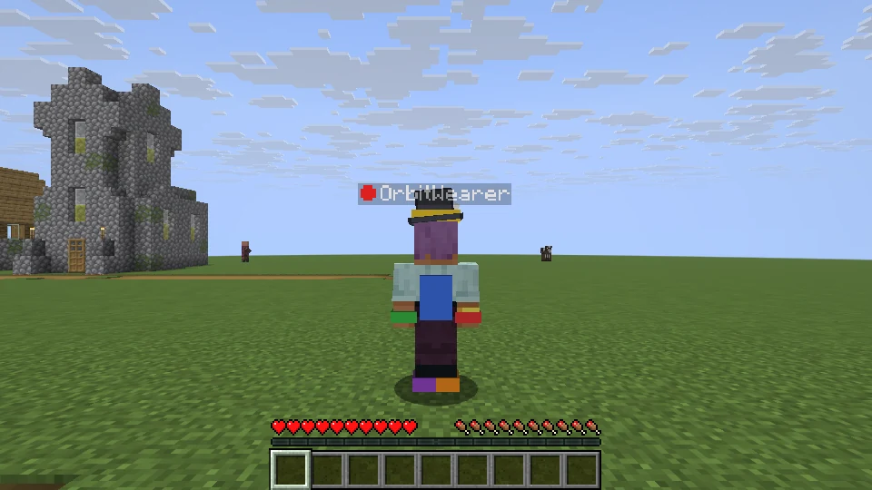
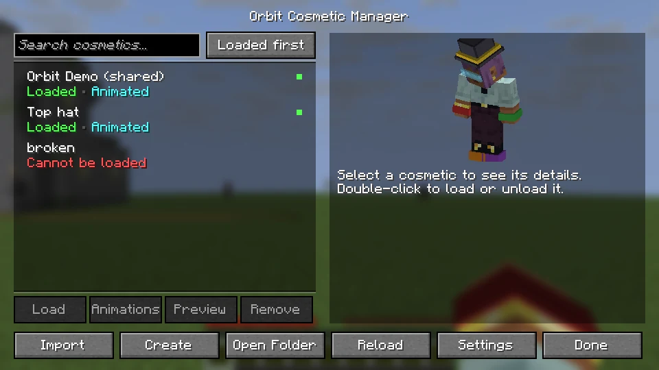
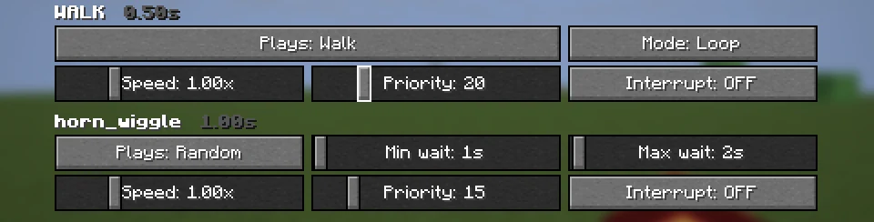
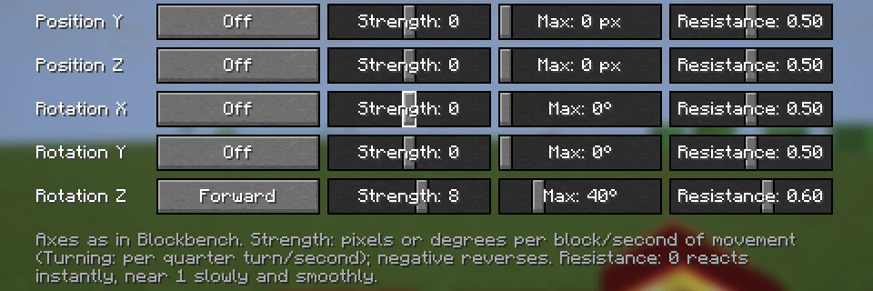
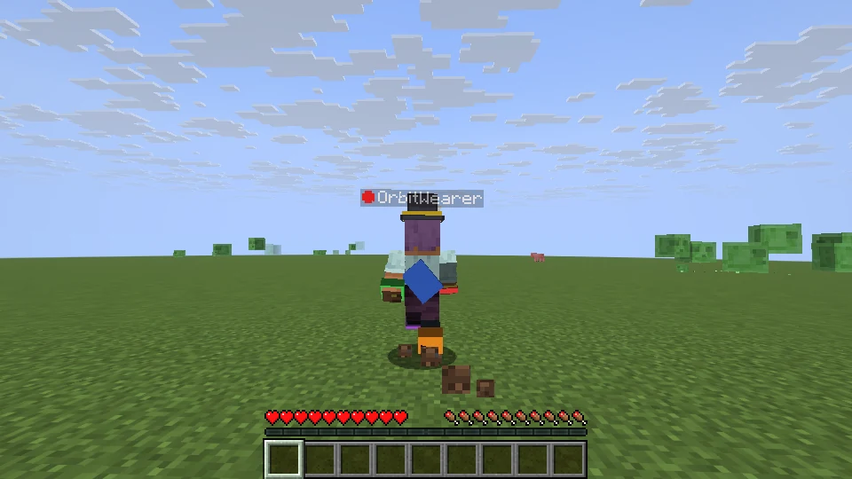
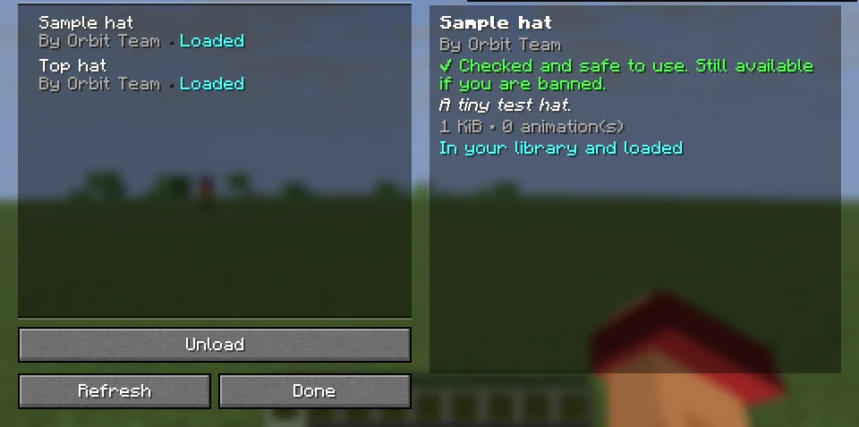
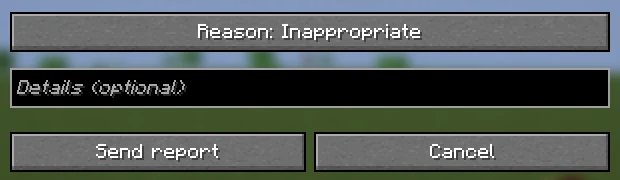
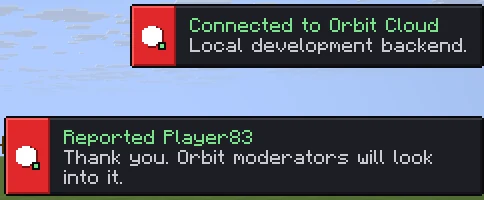

Minecraft Java 26.3 · Fabric
Your models.
On your player.
Orbit Cosmetic puts your own Blockbench models on your Minecraft player: hats, wings, backpacks, tails. They animate, react to how you move, and other Orbit players see them too.

Everything a cosmetic needs
Drop a .bbmodel file in a folder, load it, and wear it. Orbit handles the rest.
Straight from Blockbench
Use .bbmodel files as they are. Textures are embedded, nothing is converted, and changes show up after one click on Reload.
Follows your body
Attach parts to the head, body, arms or legs. They move with your real animated body, including Fresh Animations and other Entity Model Features packs.
Animations
Play animations when you idle, walk, sprint, jump, fall, sneak, swim or fly, all the time, or at random moments that every player sees at once.
Movement physics
Capes lift when you run, tails swing when you turn, backpacks bounce. Choose a part, what moves it, how far and how smoothly.
Shared with everyone
Other Orbit players see your cosmetics on servers running the Orbit server mod or plugin, and on any other server through Orbit Cloud.
Featured catalog
Browse cosmetics checked by hand by the Orbit team and add them to your collection from inside the game.

One screen for your collection
Press O to open the Cosmetic Manager. Drag models onto the window, load several at once, preview them on your player and see right away if something is wrong with a file.
- Create writes a ready-made Blockbench template with every body part.
- Each cosmetic keeps its settings in a small
.jsonnext to it, so you can share it exactly as you set it up. - Hide anyone's cosmetics for yourself from the Players menu.


Animations and physics, without code
Every animation in your model gets a trigger, a loop mode, a speed and a priority. Animations named WALK, IDLE, JUMP and so on are set up for you.
The Advanced screen adds movement physics to any part: pick it from the part tree, then choose what moves it (forward, sideways, up and down, speed or turning), how strongly, how far, and how smoothly it settles.

Everyone sees the same thing
Your animation and physics settings travel with your cosmetic. Other players' games run the same animations locally, so it looks smooth even on busy servers, and random animations start at the same moment for everyone.
Get started
You need Minecraft Java Edition 26.3 with Fabric.
- Install FabricInstall Fabric Loader 0.20.1 or newer and put Fabric API in your
modsfolder. - Add OrbitDownload the Orbit Cosmetic mod and put it in the same
modsfolder. - Add modelsStart the game once. Drop
.bbmodelfiles into the neworbitfolder in your game folder. - Wear themPress O, select a cosmetic and click Load. That's it.

Works on any server
Players without Orbit join and play as usual; nothing changes for them. Orbit players see each other's cosmetics in one of two ways:
- Servers with Orbit: the Fabric server mod or Paper plugin shares cosmetics directly and gives the server full control.
- Any other server: Orbit Cloud shares them instead. You sign in with your Minecraft account, verified by Mojang, the same way joining a server works. Your login never reaches Orbit.
| Command | What it does |
|---|---|
/orbit enable / disable | Turn Orbit on or off for everyone |
/orbit block <player> | Stop a player wearing cosmetics |
/orbit ban <hash> | Forbid a cosmetic on the server |
/orbit set requireApproval on | Only show cosmetics you approved |
/orbit set maxEquipped 3 | Limit cosmetics per player |
/orbit players | Who wears what |
For server owners
Install the Orbit server mod (Fabric) or plugin (Paper) and you decide what is allowed: uploads, downloads, animations, nameplate icons, body parts, size limits and approval of each cosmetic. Settings live in orbit-server.json and apply instantly.
Permissions work with LuckPerms and other permission plugins: orbit.use and orbit.admin on Paper, orbit_cosmetic.use and orbit_cosmetic.admin on Fabric.
Safe by design
- Models are data, never code. Files are checked before use, with strict limits on size, parts, textures and animations. Nothing inside a model is ever run.
- Every download is verified. Cosmetics are identified by a fingerprint of their contents, so nobody can swap one for another.
- Reports reach real people. Report a player from the Players menu. Players reported by several people are reviewed by moderators and can be banned from Orbit Cloud.
- You stay in control. Hide any player's cosmetics, turn off other players' cosmetics, or set how far away they are drawn.


Questions
Do other players need the mod to see my cosmetics?
Yes. Cosmetics are drawn by the Orbit mod, so only players who have it see them. Players without it play normally and are never sent anything.
Does it work with Fresh Animations or other player model packs?
Yes. By default cosmetics follow the animated model that is actually drawn, including Entity Model Features packs such as Fresh Animations. You can switch to the plain vanilla model in Settings.
Does it work on servers that don't have Orbit?
Yes, through Orbit Cloud, as long as you play with a real Minecraft account. With an offline account you can see other players' cosmetics, but yours aren't shared.
What about singleplayer and LAN worlds?
You always see your own cosmetics. When you open a world to LAN (or share it with e4mc or World Host), Orbit players who join see each other through Orbit Cloud.
Is there a size limit for models?
Yes, to keep everyone's game fast: by default 2 MiB per file, 6,144 faces, 8 textures up to 512×512 and 32 animations. Servers can set lower limits. The creator guide lists them all.
Which Minecraft versions are supported?
Minecraft Java Edition 26.3 with Fabric Loader 0.20.1+ and Fabric API. The server plugin runs on Paper 26.3.